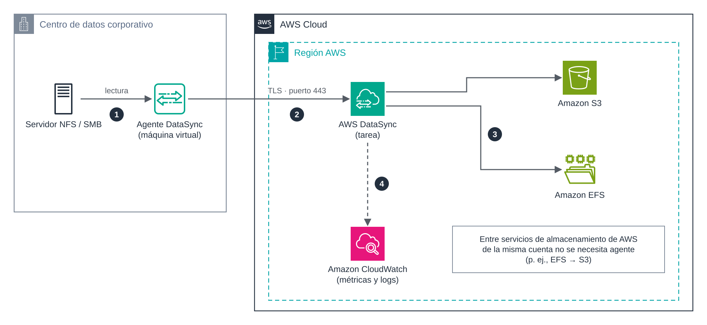

UD5 · 3. AWS DataSync¶
1. Introducción¶
AWS DataSync es un servicio gestionado de transferencia de datos en línea. Automatiza el movimiento de ficheros y objetos entre sistemas de almacenamiento locales, servicios de almacenamiento de AWS y otras nubes. Frente a una herramienta como aws s3 sync, DataSync se encarga del paralelismo, el cifrado, los reintentos, la verificación de integridad, la programación y el registro de cada ejecución.
Sus casos de uso típicos son:
- Migración de sistemas de ficheros completos (NFS, SMB, HDFS) a AWS.
- Archivado de datos fríos en clases de almacenamiento económicas de S3.
- Replicación periódica entre servicios de AWS, por ejemplo de Amazon EFS a S3.
- Flujos híbridos, en los que los datos generados en local se envían regularmente a la nube para su análisis.
Objetivos¶
- Identificar los componentes de DataSync: agente, ubicaciones, tareas y ejecuciones.
- Determinar cuándo es necesario desplegar un agente.
- Configurar una tarea con verificación, filtros, límite de ancho de banda y programación.
- Monitorizar las ejecuciones y estimar su coste.
2. Arquitectura¶

Figura 3. Transferencia desde un servidor de ficheros local hacia Amazon S3 y Amazon EFS mediante AWS DataSync.
El flujo numerado en la figura es el siguiente:
- El agente lee los datos del servidor NFS o SMB local.
- El agente los envía cifrados con TLS al servicio DataSync de la región, por el puerto 443.
- DataSync escribe los datos en la ubicación de destino (S3, EFS, FSx…).
- Las métricas y los registros de cada ejecución se publican en Amazon CloudWatch.
3. Componentes¶
| Componente | Descripción |
|---|---|
| Agente | Máquina virtual que se despliega junto al almacenamiento de origen y lee o escribe sus datos. Se instala en VMware ESXi, KVM o Microsoft Hyper-V, o como instancia de Amazon EC2. Tras desplegarlo, se activa para asociarlo a la cuenta y a la región. |
| Ubicación (location) | Definición de un origen o destino: tipo de almacenamiento, ruta y credenciales o rol de acceso. |
| Tarea (task) | Asocia una ubicación de origen con una de destino e incluye las opciones de transferencia. |
| Ejecución (task execution) | Cada ejecución concreta de una tarea, con su propio estado, métricas e informe. |
3.1. ¿Es necesario un agente?¶
| Escenario | Agente |
|---|---|
| Almacenamiento local (NFS, SMB, HDFS, almacenamiento de objetos propio) ↔ AWS | Sí |
| Amazon EFS o Amazon FSx ↔ almacenamiento en otra nube | Sí |
| Entre servicios de almacenamiento de AWS de la misma cuenta (p. ej., EFS → S3) | No |
| Amazon S3 ↔ otro servicio de AWS en otra cuenta | No |
| Amazon S3 ↔ almacenamiento de objetos de otras nubes | No |
La mayoría de las transferencias necesitan un único agente. Para conjuntos con millones de ficheros se pueden asignar hasta cuatro agentes a una ubicación, o dividir el trabajo en varias tareas paralelas. Varios agentes no proporcionan alta disponibilidad: todos deben estar en línea para que la tarea arranque.
En el Learner Lab se trabajará con transferencias entre servicios de AWS (EFS → S3), que no requieren agente.
3.2. Tipos de ubicación¶
- Locales u otras nubes: NFS, SMB, HDFS, almacenamiento de objetos compatible con S3 y Azure Blob Storage.
- AWS: Amazon S3, Amazon EFS y Amazon FSx (Windows File Server, Lustre, NetApp ONTAP y OpenZFS).
4. Modos de tarea¶
| Modo básico (Basic) | Modo mejorado (Enhanced) | |
|---|---|---|
| Funcionamiento | Prepara, transfiere y verifica los ficheros de forma secuencial. | Lista, prepara, transfiere y verifica en paralelo. |
| Escala | Sujeto a cuotas de número de ficheros por ejecución. | Número prácticamente ilimitado de objetos. |
| Ubicaciones | Todas las disponibles. | S3, EFS, FSx for Lustre y FSx for OpenZFS, frente a NFS, SMB, HDFS, almacenamiento de objetos y Azure Blob. |
| Agente | Agente en modo básico. | Agente en modo mejorado. |
| Precio | 0,0125 USD por GB transferido. | 0,015 USD por GB más 0,55 USD por ejecución. |
Precios de referencia en US East (N. Virginia), noviembre de 2026.
5. Opciones de configuración de una tarea¶
| Opción | Valores habituales | Utilidad |
|---|---|---|
| Modo de transferencia | Solo datos modificados / todos los datos | La primera opción hace la sincronización incremental. |
| Verificación | Solo ficheros transferidos / todo el destino / ninguna | Comprueba la integridad mediante sumas de comprobación al terminar. |
| Ficheros borrados en el origen | Conservar / eliminar en el destino | Equivale a la opción --delete de aws s3 sync. |
| Sobrescritura | Permitir / no permitir | Protege ficheros modificados en el destino. |
| Metadatos | Conservar propietarios, permisos POSIX y marcas de tiempo | Imprescindible en migraciones de sistemas de ficheros. |
| Filtros | Patrones de inclusión y exclusión (p. ej., *.tmp) |
Limita qué se transfiere. |
| Límite de ancho de banda | MiB/s | Evita saturar el enlace de la organización. |
| Programación | Expresión cron o rate (intervalo mínimo de una hora) |
Sincronización automática y desatendida. |
| Informe de tarea | Resumen o detallado, guardado en S3 | Evidencia de qué se transfirió, omitió o verificó. |
| Registro | Grupo de CloudWatch Logs | Diagnóstico de errores. |
Cada ejecución pasa por las fases Lanzamiento → Preparación → Transferencia → Verificación y termina en Éxito o Error. En la fase de preparación, DataSync compara origen y destino para decidir qué debe copiar.
6. Ejemplo con la AWS CLI: de Amazon EFS a Amazon S3¶
Este ejemplo reproduce el escenario de la práctica corta. Requiere un sistema de ficheros EFS con un destino de montaje, un bucket S3 y un rol con permisos sobre el bucket (en el Learner Lab, LabRole).
# 1. Ubicación de origen: EFS
# DataSync crea interfaces de red en la subred indicada; el grupo de seguridad
# debe permitir el tráfico NFS (TCP 2049) hacia el destino de montaje de EFS.
aws datasync create-location-efs \
--efs-filesystem-arn arn:aws:elasticfilesystem:us-east-1:<cuenta>:file-system/<fs-id> \
--ec2-config SubnetArn=arn:aws:ec2:us-east-1:<cuenta>:subnet/<subnet-id>,SecurityGroupArns=arn:aws:ec2:us-east-1:<cuenta>:security-group/<sg-id>
# 2. Ubicación de destino: S3
aws datasync create-location-s3 \
--s3-bucket-arn arn:aws:s3:::ud5-destino-<iniciales> \
--subdirectory /datasync \
--s3-config BucketAccessRoleArn=arn:aws:iam::<cuenta>:role/LabRole
# 3. Tarea con verificación, transferencia incremental, filtro y programación diaria
aws datasync create-task --name ud5-efs-a-s3 \
--source-location-arn <arn-ubicacion-efs> \
--destination-location-arn <arn-ubicacion-s3> \
--options VerifyMode=ONLY_FILES_TRANSFERRED,TransferMode=CHANGED \
--excludes FilterType=SIMPLE_PATTERN,Value="*.tmp" \
--schedule ScheduleExpression="cron(0 2 * * ? *)"
# 4. Ejecución manual y seguimiento
aws datasync start-task-execution --task-arn <arn-tarea>
aws datasync describe-task-execution --task-execution-arn <arn-ejecucion>
La salida de describe-task-execution incluye el estado, los bytes y ficheros transferidos y el resultado de la verificación.
7. Red y seguridad¶
- Cifrado en tránsito: todo el tráfico entre el agente y el servicio viaja cifrado con TLS.
- Cifrado en reposo: depende del destino (cifrado de S3 o de EFS).
- Tipo de endpoint del servicio: público, FIPS o de VPC. Con un endpoint de VPC (AWS PrivateLink), el tráfico del agente no atraviesa Internet. Se estudia en el documento 7.
- Permisos: DataSync accede a S3 asumiendo un rol IAM, que debe limitarse al bucket y prefijo necesarios.
- Red local: el agente solo necesita conexiones salientes hacia AWS (principalmente el puerto 443). No hay que abrir puertos entrantes desde Internet.
8. Monitorización¶
- Métricas en CloudWatch: bytes y ficheros transferidos, preparados y verificados en cada ejecución.
- Registros en CloudWatch Logs: detalle de los ficheros con error.
- Eventos en Amazon EventBridge: cambios de estado de las ejecuciones, útiles para enviar una notificación cuando una tarea falla.
- Informes de tarea: fichero en S3 con el resultado de cada fichero.
9. DataSync frente a otras herramientas¶
| Criterio | aws s3 sync |
AWS DataSync |
|---|---|---|
| Despliegue | Ninguno; basta la CLI. | Agente (si el origen es local) y configuración de tareas. |
| Escala | Adecuada para volúmenes moderados. | Diseñado para millones de ficheros y petabytes. |
| Verificación | Básica. | Integrada, con informes. |
| Programación | Externa (cron). |
Integrada. |
| Destinos | S3. | S3, EFS, FSx y otros. |
| Coste | Solo peticiones y almacenamiento. | Precio por GB transferido. |
10. Ideas clave¶
- DataSync automatiza transferencias en línea con cifrado, paralelismo, verificación y programación.
- Necesita un agente cuando intervienen almacenamiento local u otras nubes; entre servicios de AWS de la misma cuenta, no.
- Una tarea une dos ubicaciones; sus opciones controlan la incrementalidad, la verificación, los filtros y el ancho de banda.
- CloudWatch, EventBridge y los informes de tarea permiten supervisar cada ejecución.
11. Preguntas de autoevaluación¶
- ¿Por qué no es necesario desplegar un agente para transferir datos de Amazon EFS a Amazon S3 dentro de la misma cuenta?
- Una tarea programada diariamente copia 50 GB nuevos cada día en modo básico. Estima su coste mensual de DataSync.
- ¿Qué opción de la tarea usarías para que la transferencia no sature la línea de la empresa en horario laboral?
Referencias¶
- AWS. What is AWS DataSync? https://docs.aws.amazon.com/datasync/latest/userguide/what-is-datasync.html
- AWS. Do I need an AWS DataSync agent? https://docs.aws.amazon.com/datasync/latest/userguide/do-i-need-datasync-agent.html
- AWS. AWS DataSync pricing. https://aws.amazon.com/datasync/pricing/